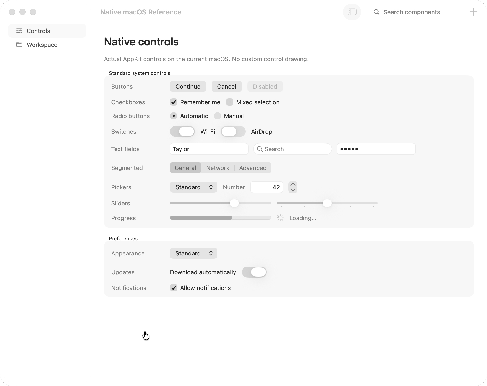
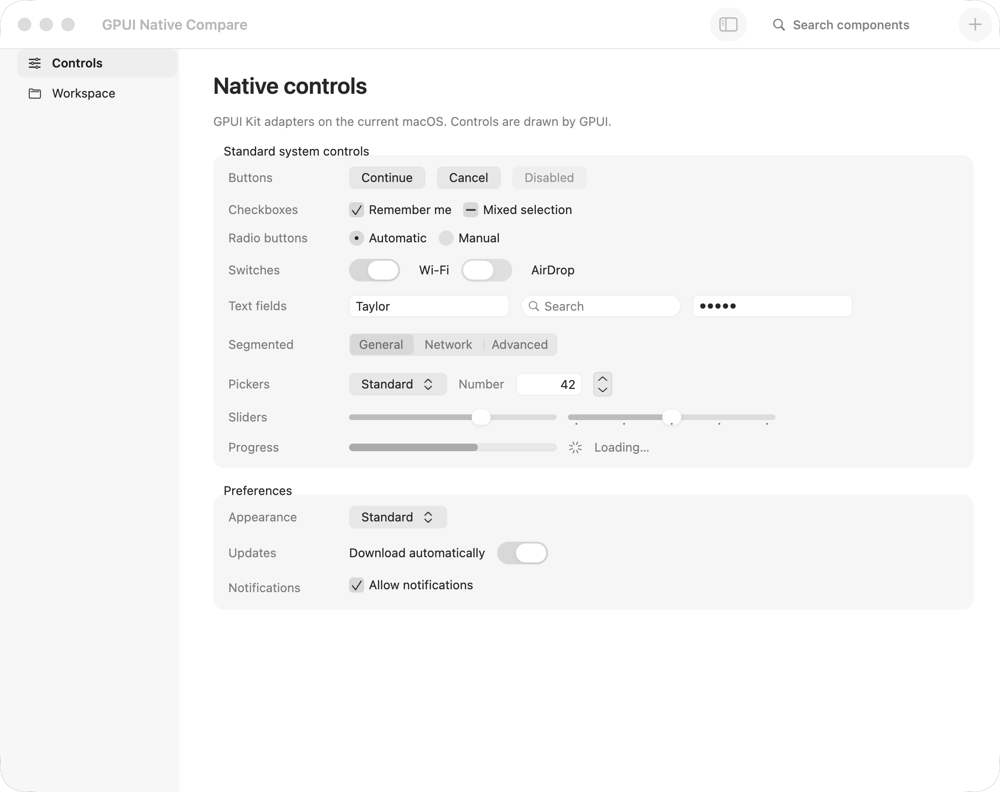

Both windows are 1060 × 840 points on macOS 26.2. Both apps are background windows and use inactive control colors. GPUI hosts a real AppKit toolbar, window corners, sidebar glass and SF Symbols. Use the overlay to compare control shapes and spacing.
The Sidebar specimen compares a real NSOutlineView.sourceList with the gallery navigation. Native row and cell measurements drive the GPUI dimensions. The GPUI sidebar continues behind the toolbar and beside the detail status bar; its edge treatment follows Apple's macOS 27 guidance. AppKit's source-list selection is vibrant: the ordinary opaque inactive-selection color does not reproduce its visible paint.


Secure-field mask geometry is now matched to the measured AppKit baseline: 5.5 point ink and 8 point spacing. The native measurement is from macOS 26.2; the library's design target is macOS 27. Secure-field measurements include the adapter font metrics.
Canvas popups now host their GPUI foreground inside a separate AppKit glass window, allowing real glass to sample the main GPUI scene. The interactive glass capture shows a moved pane retaining its counter while blurring the canvas beneath it.
The complete catalog covers 100 previews, all 80 upstream topics and all 69 module namespaces. Components without one system equivalent have explicit macOS workflow interpretations. Live checks also verify interactive popovers and separate glass submenus. Component contracts and APIs
Workflow interpretations retain Kit behavior: Setup Assistant keeps answers, validation and native-density commands; document previews keep images contained and support retained navigation. Validation includes 600 catalog draws and Clippy with speech and syntax grammar features enabled.